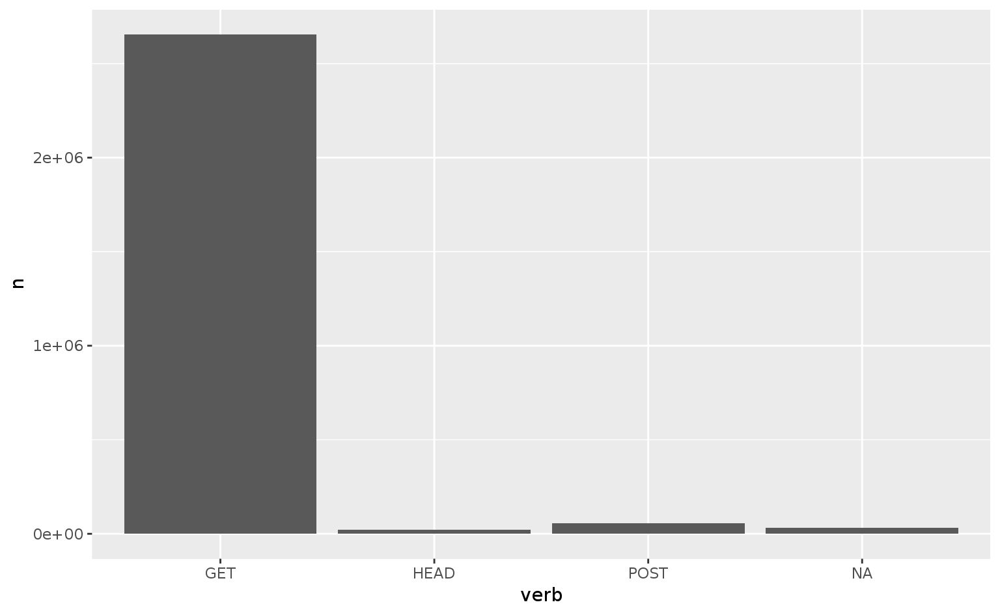

CLEO et datactivi.st
Joël Gombin et Samuel Goëta (datactivi.st)
Retrouvez les matériaux sur https://github.com/datactivist/formation_CLEO
Pad collaboratif : https://frama.link/cleo
http://logs.openedition.org => explorer des agrégats de logs
Possibilité de copier/coller les tableaux en local grâce à datapasta (mais pas sur Rstudio server :/)
indicateurs qualité => https://tools.labocleo.org/indicateurs/
Possibilité de télécharger CSV/lire depuis l’URL :
Voir la page https://tools.labocleo.org/indicateurs/qualOE1.php?pf=OB par exemple
source("./auth.R", local = TRUE) # pour ne pas publier vos identifiants
library(tidyverse)
library(httr)
indicateur <- GET("https://tools.labocleo.org/indicateurs/qualOE1.php?startYear=2009&endYear=2016&o=csv&pf=OB&index=openedition",
auth) %>% content(as = "text") %>% read_tsv()
glimpse(indicateur)Observations: 59
Variables: 5
$ Notice <int> 631, 190, 707, 793, 783, 845, 705, 204, 222, 689, 70...
$ Type <chr> "editeur", "editeur", "editeur", "editeur", "editeur...
$ Nom court <chr> "aaccademia", "ifra", "puam", "allianceathena", "alp...
$ Url Site <chr> "http://books.openedition.org/aaccademia", "http://b...
$ Titre <chr> "Accademia University Press", "Institut français de ...Graylog => https://graylog.labocleo.org/
Exploration interactive des logs (quelques jours ?)
Possibilités d’export CSV : voir ../data/graylog_hypo_1d.csv
logs <- read_csv("../data/graylog_hypo_1d.csv")
glimpse(logs)Observations: 3,193,158
Variables: 10
$ timestamp <dttm> 2016-11-23 13:39:38, 2016-11-24 01:22:16, ...
$ agent <chr> "\"Twitterbot/1.0\"", "\"Mozilla/5.0 (Windo...
$ clientip <chr> "199.16.157.182", "54.157.182.52", "207.46....
$ domain <chr> "russeurope.hypotheses.org", "mittelalter.h...
$ geoip_city_name <chr> "San Francisco", "Ashburn", "Redmond", "Red...
$ geoip_country_name <chr> "United States", "United States", "United S...
$ geoip_latitude <dbl> 37.7697, 39.0335, 47.6801, 47.6801, 47.6801...
$ geoip_longitude <dbl> -122.3933, -77.4838, -122.1206, -122.1206, ...
$ request <chr> "http://russeurope.hypotheses.org/4035", "h...
$ verb <chr> "GET", "GET", "GET", "GET", "GET", "GET", "...Exercice : explorer ces logs
Utiliser la base elasticsearch sous-jacente à graylogs :
elasticÀ suivre : https://github.com/ropensci/elasticdsl
library(elastic)
connect() #passer des paramètres spécifiques si besoin transport: http
host: 127.0.0.1
port: 9200
path: NULL
username: NULL
password: <secret>
errors: simple
headers (names): NULL # construire une requête
graylog_1185 <- Search(index = "graylog_1185", asdf = TRUE) # paramètre size = 10 par défaut, mettre 0 pour avoir toutes les réponses
# asdf = TRUE permet de retourner un dataframe plutôt qu'une liste
graylog_1185$hits$total[1] 2642721graylog_1185$hits$hits$`_source` %>% glimpseObservations: 10
Variables: 39
$ request <chr> "http://transatlantica.revues.org/7270"...
$ agent <chr> "\"Mozilla/5.0 (compatible; bingbot/2.0...
$ geoip_real_region_name <chr> "Washington", "Washington", "Washington...
$ geoip_region_name <chr> "WA", "WA", "WA", NA, NA, NA, "ON", NA,...
$ geoip_location <chr> "[-122.1206,47.68010000000001]", "[-122...
$ auth <chr> "-", "-", "-", "-", "-", "-", "-", "-",...
$ ident <chr> "-", "-", "-", "-", "-", "-", "-", "-",...
$ geoip_postal_code <chr> "98052", "98052", "98052", NA, NA, NA, ...
$ geoip_city_name <chr> "Redmond", "Redmond", "Redmond", NA, NA...
$ source <chr> "ccsdrv13", "ccsdrv13", "ccsdrv13", "cc...
$ type <chr> "apache_access", "apache_access", "apac...
$ gl2_source_input <chr> "572a0e9cedd76c1a6a56f6d6", "572a0e9ced...
$ geoip_continent_code <chr> "NA", "NA", "NA", "NA", "NA", "EU", "NA...
$ geoip_dma_code <int> 819, 819, 819, NA, NA, NA, NA, NA, NA, 819
$ geoip_country_name <chr> "United States", "United States", "Unit...
$ clientip <chr> "157.55.39.210", "157.55.39.23", "157.5...
$ geoip_ip <chr> "157.55.39.210", "157.55.39.23", "157.5...
$ gl2_source_node <chr> "5ede0295-ec50-4307-b224-7b4026c84170",...
$ geoip_longitude <dbl> -122.1206, -122.1206, -122.1206, -99.13...
$ timestamp <chr> "2016-12-08 00:40:08.000", "2016-12-08 ...
$ level <int> 6, 6, 6, 6, 6, 6, 6, 6, 6, 6
$ geoip_area_code <int> 425, 425, 425, NA, NA, NA, NA, NA, NA, 425
$ geoip_coordinates <chr> "[-122.1206,47.68010000000001]", "[-122...
$ geoip_latitude <dbl> 47.6801, 47.6801, 47.6801, 19.4300, 19....
$ geoip_timezone <chr> "America/Los_Angeles", "America/Los_Ang...
$ streams <list> [<"57f7b61eedd76c34aeb467f7", "57f3b1a...
$ verb <chr> "GET", "GET", "GET", "GET", "GET", "GET...
$ message <chr> "transatlantica.revues.org 157.55.39.21...
$ command <chr> "/etc/logstash/allLogs", "/etc/logstash...
$ referrer <chr> "\"-\"", "\"-\"", "\"-\"", "\"https://j...
$ geoip_country_code3 <chr> "USA", "USA", "USA", "MEX", "MEX", "FRA...
$ geoip_country_code2 <chr> "US", "US", "US", "MX", "MX", "FR", "CA...
$ full_message <chr> "transatlantica.revues.org 157.55.39.21...
$ response <chr> "200", "200", "404", "200", "200", "200...
$ bytes <chr> "5651", "6061", "2104", "1789", "10988"...
$ domain <chr> "transatlantica.revues.org", "cdlm.revu...
$ httpversion <chr> "1.1", "1.1", "1.0", "1.1", "1.1", "1.1...
$ location <chr> "47.68010000000001,-122.1206", "47.6801...
$ facility <chr> "gelf-rb", "gelf-rb", "gelf-rb", "gelf-...# ne retourner que certains champs
res <- Search(index = "graylog_1185", fields = c("geoip_country_name", "timestamp",
"domain"), asdf = TRUE)
res$hits$hits$fields geoip_country_name timestamp domain
1 United States 2016-12-08 00:40:08.000 transatlantica.revues.org
2 United States 2016-12-08 00:40:07.000 cdlm.revues.org
3 United States 2016-12-08 00:40:08.000 noway.openedition.org
4 Mexico 2016-12-08 00:40:08.000 jsa.revues.org
5 Mexico 2016-12-08 00:40:08.000 jsa.revues.org
6 France 2016-12-08 00:40:08.000 calenda.org
7 Canada 2016-12-08 00:40:08.000 conflits.revues.org
8 Mexico 2016-12-08 00:40:08.000 jsa.revues.org
9 France 2016-12-08 00:40:08.000 www.openedition.org
10 United States 2016-12-08 00:40:08.000 filstoria.hypotheses.org# trier les résultats
Search(index = "graylog_1185", fields = c("geoip_country_name", "timestamp",
"domain"), sort = "timestamp", asdf = TRUE)$hits$hits %>% select(-`_index`,
-`_type`, -`_id`, -`_score`, -sort) fields.geoip_country_name fields.timestamp
1 United States 2016-12-07 22:59:57.000
2 United Kingdom 2016-12-07 23:00:29.000
3 United States 2016-12-07 23:01:35.000
4 United States 2016-12-07 23:01:41.000
5 United States 2016-12-07 23:01:42.000
6 United States 2016-12-07 23:01:43.000
7 United States 2016-12-07 23:01:43.000
8 United States 2016-12-07 23:01:44.000
9 United States 2016-12-07 23:01:44.000
10 United States 2016-12-07 23:01:44.000
fields.domain
1 books.openedition.org
2 anthrovision.revues.org
3 lrf.revues.org
4 lrf.revues.org
5 cybergeo.revues.org
6 trivium.revues.org
7 books.openedition.org
8 books.openedition.org
9 books.openedition.org
10 books.openedition.orgElasticsearch a son propre DSL de requêtes, en JSON : https://www.elastic.co/guide/en/elasticsearch/reference/current/query-dsl.html
Préparer la requête avec Graylog et l’implémenter ensuite…
# passer des requêtes
query <- "{
\"query\": {
\"constant_score\": {
\"filter\": [
{ \"term\": { \"domain\": \"books.openedition.org\"}},
{ \"range\": { \"timestamp\": { \"gte\": \"2016-12-07 23:00:30.000\"}}}
]
}
}
}"
results <- Search(index = "graylog_1185", body = query, asdf = TRUE, size = "10000",
scroll = "5m")
# results2 <- scroll(results$`_scroll_id`, asdf = TRUE) results2 <-
# Search(index = 'graylog_1185', body = query, asdf = TRUE, size = '10000',
# from = '10000')aesthetic mapping)layer) : geom et statscale)coord)facet)theme)aesgeomtheme
Attaching package: 'rex'The following object is masked from 'package:stringr':
regexThe following object is masked from 'package:dplyr':
escapeRex functions and shortcuts attached!logs %>% group_by(verb) %>% summarise(n = n()) %>% ungroup %>% filter(n > 100) %>%
ggplot(aes(x = verb, y = n)) + geom_histogram(stat = "identity")Warning: Ignoring unknown parameters: binwidth, bins, pad
geomgeom_pointgeom_linegeom_textgeom_quantilegeom_histogramgeom_densitygeom_smoothgeom_bargeom_mapaestheticsxycolourfillsizelwdlty